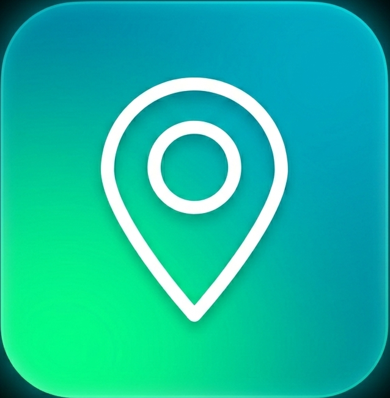

SYSTEM INITIALIZING
CONNECT PERIPHERALS TO START
LEFT DEVICE
RIGHT DEVICE
READY TO CONNECT...
VIDEO

MAP
PDF
[LEFT / RIGHT] SELECT • [PRESS] START
MODE: PAN
SERIAL CONTROLS
- scroll: scroll
- press: toggle mode (PAN/ZOOM)